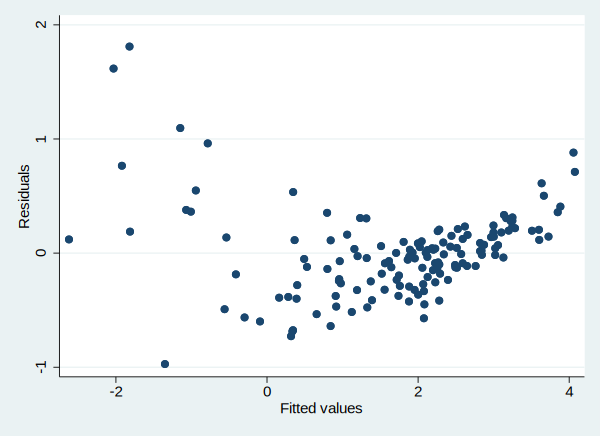
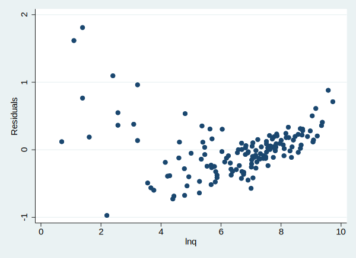
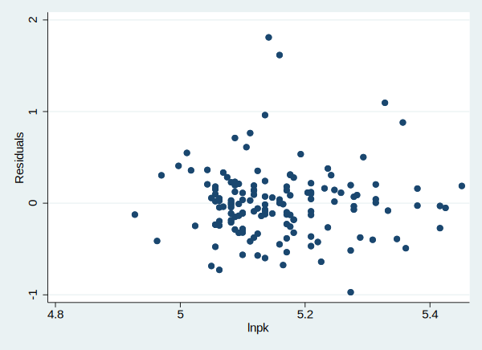

古典线性回归的假设是一种理想状态, 现实数据很难满足, 比如异方差就是一个常见的违背模型假设的情况。下面我们介绍一下如何检验数据是否存在异方差以及出现异方差的情况后如何处理。
数据介绍
这是Nevlove(1963)的数据, 在之前的教程中一直使用这个数据, 相信大家已经非常熟悉。首先我们载入数据集:
1 | use data/nerlove.dta, clear |
(Nerlove 1963 paper)
看一下数据的基本情况:
1 | describe |
Contains data from data/nerlove.dta
obs: 145 Nerlove 1963 paper
vars: 10 13 Aug 2012 10:00
size: 5,220
---------------------------------------------------------------------------------------------------------------------------------------------------------------------------------------------------------------------------------------------------------------
storage display value
variable name type format label variable label
---------------------------------------------------------------------------------------------------------------------------------------------------------------------------------------------------------------------------------------------------------------
tc float %9.0g total cost
q int %8.0g total output
pl float %9.0g price of labor
pf float %9.0g price of fuel
pk int %8.0g user cost of capital
lntc float %9.0g
lnq float %9.0g
lnpf float %9.0g
lnpk float %9.0g
lnpl float %9.0g
---------------------------------------------------------------------------------------------------------------------------------------------------------------------------------------------------------------------------------------------------------------
Sorted by:
做简单的线性回归:
1 | reg lntc lnq lnpl lnpk lnpf |
Source | SS df MS Number of obs = 145
-------------+---------------------------------- F(4, 140) = 437.90
Model | 269.524728 4 67.3811819 Prob > F = 0.0000
Residual | 21.5420958 140 .153872113 R-squared = 0.9260
-------------+---------------------------------- Adj R-squared = 0.9239
Total | 291.066823 144 2.02129738 Root MSE = .39227
------------------------------------------------------------------------------
lntc | Coef. Std. Err. t P>|t| [95% Conf. Interval]
-------------+----------------------------------------------------------------
lnq | .7209135 .0174337 41.35 0.000 .6864462 .7553808
lnpl | .4559645 .299802 1.52 0.131 -.1367602 1.048689
lnpk | -.2151476 .3398295 -0.63 0.528 -.8870089 .4567136
lnpf | .4258137 .1003218 4.24 0.000 .2274721 .6241554
_cons | -3.566513 1.779383 -2.00 0.047 -7.084448 -.0485779
------------------------------------------------------------------------------
画残差与拟合值的散点图:
1 | rvfplot |

从这个图中可以清楚的看到, 随着拟合值的变化, 残差也发生了有规律的变化。所以我们可以怀疑存在异方差的现象。
我们还可以绘制残差与任意变量的散点图:
1 | rvpplot lnq |

1 | rvpplot lnpk |

上面的散点图可以看出, 很有可能存在异方差的现象。
怀特检验
我们可以使用怀特检验来检验异方差是否真的存在。我们用到了estat命令, 它指的是’post-estimation statistics’, 统计后估计量, 而imtest指的是informatrix test:
1 | estat imtest, white |
White's test for Ho: homoskedasticity
against Ha: unrestricted heteroskedasticity
chi2(14) = 73.88
Prob > chi2 = 0.0000
Cameron & Trivedi's decomposition of IM-test
---------------------------------------------------
Source | chi2 df p
---------------------+-----------------------------
Heteroskedasticity | 73.88 14 0.0000
Skewness | 22.79 4 0.0001
Kurtosis | 2.62 1 0.1055
---------------------+-----------------------------
Total | 99.29 19 0.0000
---------------------------------------------------
我们可以看到卡方值是chi2(14) = 73.88, 显著性为 Prob > chi2 = 0.0000, 显然应当拒绝虚无假设Ho: homoskedasticity, 存在异方差。
BP检验
我们还可以使用BP检验:
stata实际应用中, 我们可能采取三种方法, 通常这三种方法都可以做一遍:
- estate hettest (默认设置, 使用拟合值
$\hat y$
1 | estat hettest, iid |
Breusch-Pagan / Cook-Weisberg test for heteroskedasticity
Ho: Constant variance
Variables: fitted values of lntc
chi2(1) = 29.13
Prob > chi2 = 0.0000
1 | estat hettest, rhs iid |
Breusch-Pagan / Cook-Weisberg test for heteroskedasticity
Ho: Constant variance
Variables: lnq lnpl lnpk lnpf
chi2(4) = 36.16
Prob > chi2 = 0.0000
1 | estat hettest lnq, iid |
Breusch-Pagan / Cook-Weisberg test for heteroskedasticity
Ho: Constant variance
Variables: lnq
chi2(1) = 32.10
Prob > chi2 = 0.0000
不管用哪种方法, 都可以看到我们都应该拒绝同方差的原假设。
异方差的处理
由于数据存在异方差,我们的回归结果是不可信的, 所以可以使用WLS方法(加权的最小二乘法)。它的原理是, 使用扰动项方差的估计值的倒数作为权重, 再进行回归, 加权后, 可以使得方差较大的数据点的权重降低。
计算残差e1
首先还是要进行回归:
1 | quietly reg lntc lnq lnpl lnpk lnpf |
计算残差e1:
1 | predict e1, res |
残差的平方
1 | gen e2 = e1^2 |
残差平方的对数
1 | gen lne2 = log(e2) |
使用lnq估计残差值
1 | reg lne2 lnq , noc |
Source | SS df MS Number of obs = 145
-------------+---------------------------------- F(1, 144) = 419.95
Model | 2065.53636 1 2065.53636 Prob > F = 0.0000
Residual | 708.275258 144 4.91857818 R-squared = 0.7447
-------------+---------------------------------- Adj R-squared = 0.7429
Total | 2773.81162 145 19.1297353 Root MSE = 2.2178
------------------------------------------------------------------------------
lne2 | Coef. Std. Err. t P>|t| [95% Conf. Interval]
-------------+----------------------------------------------------------------
lnq | -.5527533 .0269733 -20.49 0.000 -.6060681 -.4994384
------------------------------------------------------------------------------
从结果中可以看出来, 残差变动可以被lnq解释75%, 这还是一个挺严重的问题。
我们可以计算上述回归的拟合值, 作为lnq可以解释的那部分残差:
1 | predict lne2f |
(option xb assumed; fitted values)
因为lne2f是取对数的结果, 所以我们再求指数值:
1 | gen e2f = exp(lne2f) |
使用加权最小二乘法
最终使用加权的最小二乘法来进行回归检验:
1 | reg lntc lnq lnpl lnpk lnpf [aw=1/e2f] |
(sum of wgt is 8.1811e+03)
Source | SS df MS Number of obs = 145
-------------+---------------------------------- F(4, 140) = 895.03
Model | 173.069988 4 43.2674971 Prob > F = 0.0000
Residual | 6.76790874 140 .048342205 R-squared = 0.9624
-------------+---------------------------------- Adj R-squared = 0.9613
Total | 179.837897 144 1.24887428 Root MSE = .21987
------------------------------------------------------------------------------
lntc | Coef. Std. Err. t P>|t| [95% Conf. Interval]
-------------+----------------------------------------------------------------
lnq | .8759035 .0153841 56.94 0.000 .8454883 .9063187
lnpl | .5603879 .1734141 3.23 0.002 .2175389 .9032369
lnpk | -.0929807 .1960402 -0.47 0.636 -.4805627 .2946014
lnpf | .4672438 .0616476 7.58 0.000 .3453632 .5891243
_cons | -5.522088 .9928472 -5.56 0.000 -7.485 -3.559176
------------------------------------------------------------------------------
对比OLS的结果, 上面WLS的结果可以看出, lnpl的系数由不显著变为显著, lnpk系数由”-0.22”变为”-0.09”, 其理论值是正值, 结果显示, WLS提高了回归估计效率。
注意
本文由jupyter notebook转换而来, 您可以在这里下载notebook
有问题可以直接在下方留言
或者给我发邮件675495787[at]qq.com
请记住我的网址: mlln.cn 或者 jupyter.cn